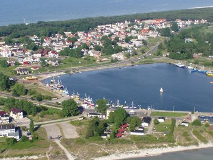
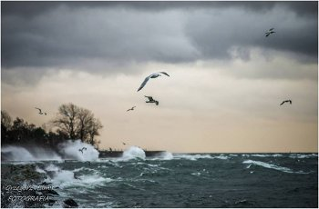
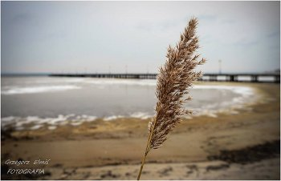
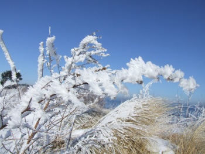

Wielu Gości, spośród tych, którzy przyjeżdżają do nas po raz pierwszy ma wiele wątpliwości. Nie są pewni, czego można się spodziewać po niewielkiej miejscowości turystycznej położonej na wąskim pasie Mierzei Helskiej, oblanej z dwóch stron wodą.
Odpowiadamy na najczęściej zadawane przez Gości pytania, by mogli Państwo wybrać dla siebie odpowiedni termin przyjazdu i dowiedzieć czego można się spodziewać po przyjeździe do Jastarni, serca Półwyspu Helskiego.
1. Jaka pora roku jest najatrakcyjniejsza w waszym regionie ?
Jastarnia jest piękna cały rokJastarnia leży w samym centrum Mierzei Helskiej, która jest wsunięta w głąb morza i otoczona z dwóch stron wodą, co wpływa na jej mikroklimat. Latem, morze chłodzi oraz chroni przed doskwierającym upałem i suchym powietrzem, zimą morze oddaje ciepło, dzięki czemu nie mamy srogich zim i silnych mrozów.
Miejscowi ludzie zajmują się głównie rybołówstwem i turystyką. Jesteśmy bardzo przywiązani do kultury kaszubskiej, pielęgnujemy ją, kultywujemy tradycje przekazywane od pokoleń. Mówimy po kaszubsku, akcenty regionalne można odczuć i zobaczyć w wielu miejscach. Na przykład wszystkie nazwy ulic zapisane są w dwóch językach polskim i kaszubskim, organizowane są wystawy, barwne przemarsze Kaszubów i pomerankowców, marsze śledzia - wodami zatoki na Suchą Rewę (Ryf Mew), występy, festyny m.in.: Laskorn (Jastarnia 100 lat temu i dawniej) - w weekend majowy, Sobótka (widowiskowa, unikalna, organizowana przez 18-stoletnią młodzież) -23 czerwca, Dni Węgorza w sierpniu.
Półwysep Helski o każdej porze roku jest wyjątkowy i atrakcyjny.Wiosną jest pięknie, są już dłuższe i cieplejsze dni, więc wspaniale pospacerować (z kijkami lub bez) brzegiem morza. Taki spacer, oprócz dotlenienia i nasycenia organizmu jodem, działa uspokajająco, odstresowuje, no i wpływa na poprawę kondycji. Polecam przejażdżki rowerowe szczególnie nad wodą, ścieżką rowerową wzdłuż Zatoki Puckiej do Kuźnicy - 7 km, Chałup - 11 km albo do Władysławowa i dalej lub lasem w stronę Helu, nawet na sam Cypel. Do Juraty - 4 km, do Helu - 14 km. Są tu też dobre warunki do jazdy na rolkach (szczególnie póki nie ma tłumów). Zachęcam też do kąpieli morskiej z Jastarnickimi morsami (wystarczy mieć strój kąpielowy, polecam też buty neoprenowe). Taka kąpiel poprawia humor, krążenie krwi, metabolizm, wzmacnia odporność i zwiększa wydolność fizyczną organizmu. A po kąpieli zapraszam do saunowania. Sauna: poprawia wygląd skóry, pobudza układ immunologiczny, pomaga pozbyć się toksyn, przyśpiesza metabolizm, odstresowuje i poprawia nastrój. Półwysep Helski jest ciekawym miejscem dla ornitologów. Tu zachodzą zjawiska niespotykane w innych częściach Polski. Ze względu na mikroklimat i unikalną florę wiosna i jesień to czas spektakularnych i widowiskowych wędrówek wielu gatunków ptaków.
Latem największą atrakcją dla turystów jest plażowanie, kąpiele morskie, no i uprawianie rozmaitych sportów przede wszystkim wodnych m. in.: żeglarstwo, kajakarstwo, windsurfing, kitesutfing, nurkowanie, pływanie w łodziach, motorówkach, skuterach, rowerami wodnymi, na nartach wodnych, bananach... Latem jest najwięcej imprez organizowanych przez: gminę, MOKSiR, Zrzeszenie Kaszubsko - Pomorskie, kościół i mieszkańców: festiwale, festyny, koncerty, wystawy, występy, pokazy).
Jesień jest dla tych, którzy chcą odpocząć od zgiełku miasta, nacieszyć się widokiem już dość pustych plaż, pomedytować, odstresować się, ukoić zmysły szumem fal, pooddychać świeżym, morskim, nasyconym jodem powietrzem. Ze względu na wyższe stężenie tego pierwiastka w powietrzu, lekarze polecają spacery brzegiem morza (szczególnie wiosną i jesienią) przede wszystkim tym, którzy mają niedoczynność tarczycy, problemy z gardłem lub całym układem oddechowym, nadciśnieniem czy krążeniem krwi.Zima z kolei, to okres ogromnych koncentracji ptaków, które przylatują z północy, by na spokojnych, płytkich, obfitujących w pokarm wodach bezpiecznie spędzić tę porę roku. Ten mało zagospodarowany pod względem turystycznym okres jest więc szczególnie atrakcyjny ornitologicznie. Zimą przyjazd nad morze sprzyja wyciszeniu się, pracy twórcej ale również i uaktywnieniu fizycznemu, poprawie kondycji. Puste ale malownicze plaże (w czasie chłodów powstają góry z kry lodowej, sople zwisające z uformowanego przez wiatry w rozmaite kształty plażowego piasku, przez kolorystykę wody i nieba od ciemnego granatu, poprzez zielenie, pomarańcze aż po odcienie różu) i kojący szum fal zachęca do medytacji oraz sprzyja wenie twórczej. Spacery nadmorskie, nad zatoką, uliczkami portowymi, nordic walking ścieżkami leśnymi czy rekreacyjno-przyrodniczymi sprzyją poprawie kondycji i nabraniu sił.
Wszystkie ścieżki są specjalnie oznakowane strzałkami kierunkowymi, mapami oraz tablicami opisującymi najciekawsze miejsca. Na tablicach umieszczone są, informacje np. o sztucznych umocnieniach brzegu morskiego, historii portu w Jastarni oraz widocznych z brzegu Zatoki Puckiej torpedowniach (domach na wodzie). Do ścieżek przyrodniczych dojść lub dojechać można drogami rowerowymi. Warto zabrać ze sobą na wyprawę po ścieżkach lornetkę - Półwysep Helski jest bowiem doskonałym miejscem do obserwacji ptaków. Wzdłuż ścieżek są umieszczone przystanki w miejscach dogodnych do obserwacji ornitologicznych.Warto odwiedzić również ścieżki przyrodnicze: w Kuźnicy - UROCZYSKO KAŻA i GÓRA LIBEK, w Jastarni - TORFOWE KŁYLE oraz stanowisko obserwacji ptaków wodnych w porcie, w Juracie - ŻYZNE LASY Z ORLICĄ.
2. Jakie najciekawsze atrakcje można znaleźć w najbliższej okolicy ? Jak daleko się znajdują?
Dom Wypoczynkowy Korab jest położony w spokojnej, cichej okolicy, blisko lasku i morza, ale w niewielkiej odległości znajduje się wszystko, co niezbędne do dobrego wypoczynku. Oprócz bliskości wody i zieleni mamy w najbliższej okolicy kilka obiektów gastronomicznych: restaurację, stołówkę, bar, smażalnię ryb, lodziarnię, kilka sklepików, market. W pobliżu mamy również: wypożyczalnię rowerów, plac zabaw dla dzieci i boisko Orlik, usługi kosmetyczne i zakład fryzjerski. Niedaleko są również szkółki: windsurfingu i kitesurfingu z wypożyczalnią sprzętu wodnego oraz strojów neoprenowych.
W pobliżu naszej posesji znajdują się:las – 60 m morze – 250 m bar na plaży – 260 m zatoka – 400 m szkółki sportów wodnych (z wypożyczalnią sprzętu) – 400 m, najbliższa restauracja - 40 m najbliższa stołówka - 80 m najbliższy bar – 80 m najbliższy sklepy - 50 m PKS - 100 m PKP: Jastarnia Wczasy - 400 m, Stacja Główna – 800 m ścieżka rowerowa - 100 m (z jednej strony wiodąca na sam Hel – 14 km, z drugiej do Pucka – 33 km i dalej) wiodąca częściowo przez teren zalesionych wydm, częściowo wzdłuż linii brzegowej Zatoki Puckiej Kościół NNMP (piękny, neobarokowy w stylu marynistycznym) – 500 m usługi kosmetyczne – 40 m gabinet masażu - 20 m wypożyczalnia rowerów - 50 m wypożyczenie łodzi (pomeranki) ze sternikiem - 20 m boisko Orlik - 350 m chatę rybacką z 1881 r. - 500 m centrum - 600 m lotnisko - 600 m molo spacerowe - 700 m port rybacki - 900 m kino - 900 m marina - 950 m
Warto zobaczyć:
skansen fortyfikacji z 1939 r. - 900 m port rybacki i przystań jachtową - 900 m latarnię morską – 1600 m park z pomnikiem przyrody (piękny, rozłożysty kasztanowiec biały) – 1700 m Muzeum Pod Strzechą – 2 km piaszczyste wydmy z unikalną roślinnością – rozciągające się wzdłuż brzegu oraz: Bałtykarium w Juracie Fokarium w Helu Oceanarium we Władysławowie
Dodatkowe atrakcje:skoki spadochronowe przeloty widokowe nad Półwyspem Helskim nurkowanie wędkowanie na pełnym morzu pływanie rekreacyjne po Zatoce Puckiej (kutrem lub łodzią) rejsy do Gdyni, Sopotu lub Gdańska statkiem lub tramwajem wodnym
3. Jak zarezerwować nocleg w waszym obiekcie ? W jakiej wysokości wpłacić zaliczkę ?
Noclegi najlepiej rezerwować telefonicznie. Nr tel.: 693 383 117, 605 305 190. Od momentu rezerwacji czekamy 7 dni na przesłanie zadatku. Wysokość zadatku jest uzależniona od długości pobytu i ceny pokoju. Zazwyczaj prosimy o wartość przynajmniej dwóch dób. Po zaksięgowaniu wpłaty następuje 100% rezerwacja.
4. Gdzie w waszej okolicy można dobrze zjeść ? Jak daleko ?
Z wyżywieniem nie ma najmniejszego problemu. W promieniu 100 m od Domu Wypoczynkowego Korab mamy 4 punkty gastronomiczne (najbliższy oddalony o 40 m): restauracja, stołówka, bar i obiady domowe. Trochę dalej jest smażalnia ryb i bliżej centrum mnóstwo innych obiektów gastronomicznych: restauracji, barów, smażalni, kawiarenek... Nie wszystkie prosperują poza sezonem letnim, ale i tak nawet zimą jest gdzie smacznie zjeść. Osoby przygotowujące sobie samodzielnie posiłki również nie mają problemu, ponieważ w okolicy jest kilka sklepów spożywczych (najbliższy oddalony o 50 m), niedaleko jest również Biedronka, w której można nabyć produkty spożywcze i przygotować sobie posiłki w kuchni lub aneksie kuchennym.